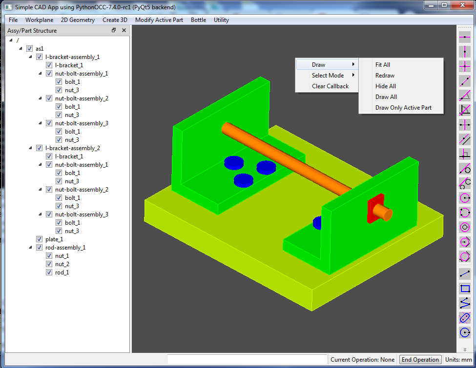

I just finished updating an old 3D CAD project to run on the latest version of PythonOCC (version '7.4.0-rc1'), with Python 3.7 and PyQt5. The name 'CADViewer' for the old project seemed appropriate mostly because that was the limit of its functionality. You could open a STEP file and display the 3D model and display its assembly structure, but that's about it. The code hadn't been touched since September, 2016. It ran on PythonOCC version '0.16.3' with Python 2.7 and PyQt4. I ended up needing to tweak a lot of things in order to get it running again, but here it is, (functionally) as it was 3+ years ago.
My goals in this project have remained roughly consistent. I'm scratching an itch to build a 3D CAD App that provides useful functionality and is also fun to use. In my work as a mechanical design engineer, my favorite CAD was SolidDesigner (3D) and me10 (2D), originally developed by HP, then spun off as CoCreate (and later purchased by PTC). I have borrowed rather heavily from my experience with SolidDesigner and have tried to mimic its functionality.
Enjoy!
My goal is to continue adding more functionality while maintaining the code up to date with the latest relaease of PythonOCC. Here are some of my most immediate things toDo/toFix .

Doug Blanding (dblanding@gmail.com)